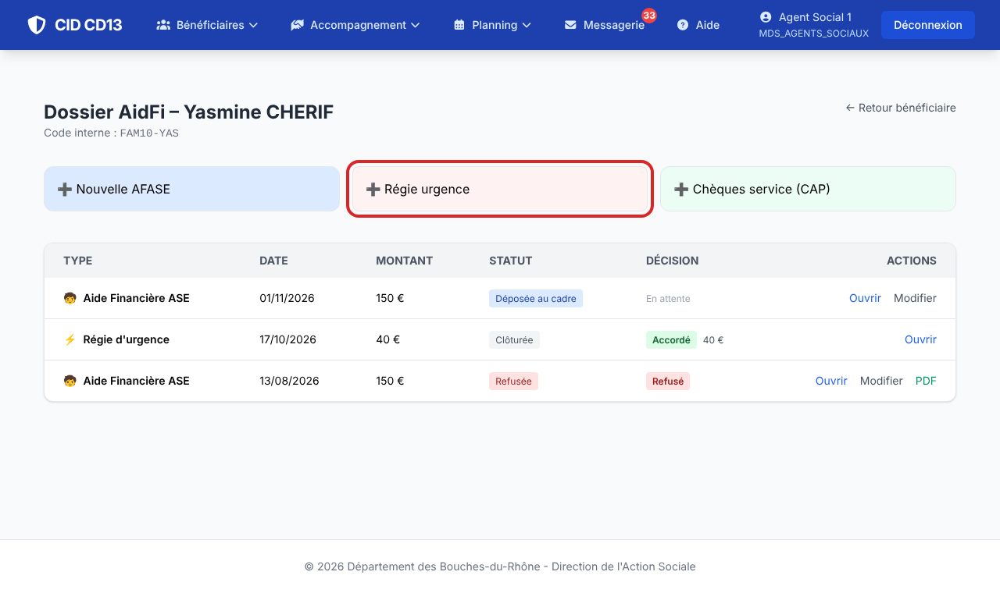
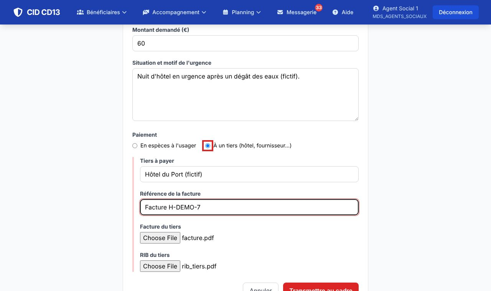
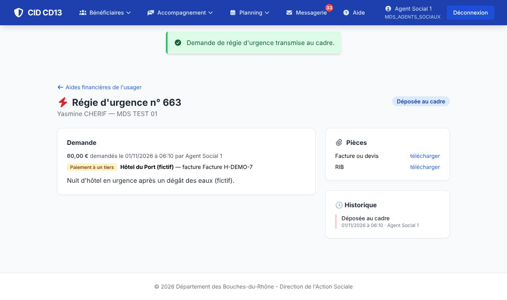

1Ouvrir la demande

- Fiche de l'usager → Aides financières → Régie urgence.
2Remplir et transmettre


- Indiquez le montant et le motif de l'urgence.
- En espèces : l'usager viendra avec une pièce d'identité avec photo en cours de validité. À un tiers : nom du tiers, référence de la facture, et joignez la facture et le RIB du tiers.
- Cliquez sur Transmettre au cadre.
Montant : se conformer au maximum prévu par la note de service en vigueur. Pour une urgence alimentaire, privilégiez les chèques service.
Bon à savoir
- L'aide d'urgence n'est pas déduite d'une AFASE à venir.
- Absence totale de ressources ou baisse importante et soudaine : joignez un avis motivé et un justificatif (attestation CAF…).
Et ensuite ?
Cliquez sur une image pour l'agrandir. Le cadre rouge montre où cliquer ou quoi remplir. Toutes les données affichées sont fictives.